Kondisi Indonesia terkait SDGs 3 saat ini berada dalam proses transformasi yang positif di bidang kesehatan, dengan fokus utama pada pemerataan akses layanan kesehatan dan peningkatan kualitas hidup seluruh penduduk. Upaya ini didukung oleh kebijakan pemerintah yang memperluas jaminan kesehatan nasional, penguatan tenaga medis, dan berbagai program edukasi serta pencegahan penyakit yang melibatkan kerja sama lintas sektor dan kemitraan internasional. Salah satu terobosan terbesar adalah program Cek Kesehatan Gratis (CKG) sebagai bagian dari transformasi layanan primer: lebih dari puluhan juta warga sudah menjalani skrining gratis di puskesmas, posyandu, sekolah, dan fasilitas sosial, yang langsung menindaklanjuti temuan hipertensi, diabetes, gangguan paru, dan masalah gigi dengan pengobatan dan edukasi gaya hidup sehat. Bersamaan dengan penguatan Posyandu, Nusantara Sehat, dan digitalisasi lewat SATUSEHAT, program cek kesehatan massal ini menjadi fondasi penting untuk deteksi dini penyakit dan pencegahan, sehingga berbagai organisasi, institusi kesehatan, komunitas, dan mitra global seperti PBB dapat bersama-sama mendorong perubahan perilaku hidup sehat, meningkatkan pelayanan di daerah terpencil, dan memastikan seluruh lapisan masyarakat memperoleh hak atas kesehatan dan kesejahteraan secara berkelanjutan sesuai target SDGs 3.
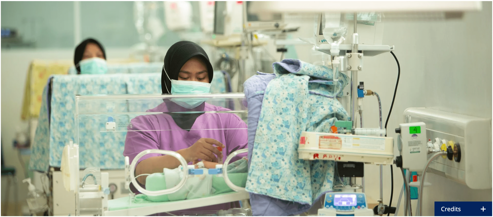Angka kematian bayi turun menjadi sekitar 17 per 1.000 kelahiran hidup dan kematian ibu menjadi 158 per 100.000 kelahiran berkat perluasan layanan ANC/PNC di puskesmas, persalinan oleh tenaga kesehatan terlatih, dan cakupan imunisasi dasar yang makin tinggi.
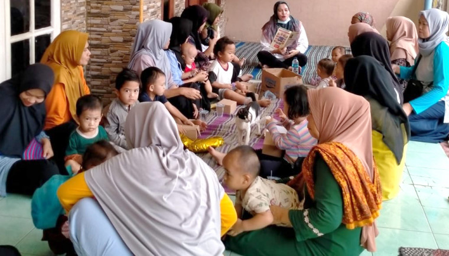Indonesia mendeteksi sekitar 1,09 juta kasus TBC dengan keberhasilan pengobatan di atas 80%, kasus DBD 2025 turun hampir 50% dibanding tahun sebelumnya, dan layanan tes serta pengobatan HIV–malaria diperkuat lewat puskesmas dan rumah sakit rujukan.
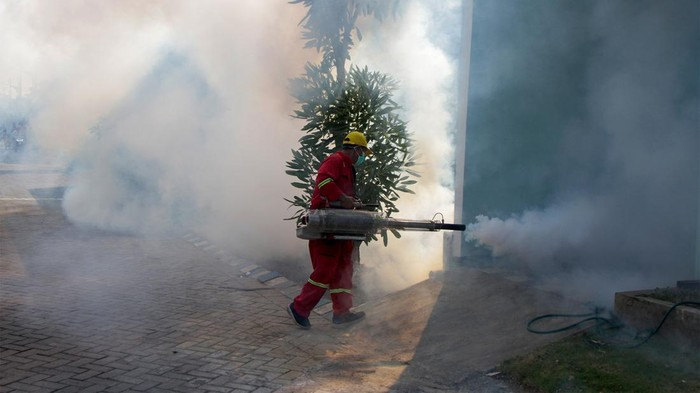Sekitar 75% kematian di Indonesia kini disebabkan penyakit tidak menular (PTM), terutama penyakit jantung, stroke, kanker, diabetes, dan penyakit paru kronis yang banyak dipicu pola makan tidak sehat, kurang aktivitas fisik, dan merokok. Melalui program cek kesehatan gratis, pemerintah gencar mengajak masyarakat rutin mengukur tekanan darah, gula darah, dan berat badan agar hipertensi (sekitar 20% hasil skrining) dan diabetes (sekitar 5,9%) bisa ditemukan lebih awal lalu dikontrol dengan obat dan perubahan gaya hidup sebelum menyebabkan komplikasi berat.
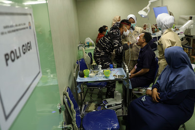Sekitar 83% penduduk sudah terlindungi JKN sehingga bisa berobat dengan BPJS, rasio tenaga kesehatan nasional meningkat menjadi ±54,2 per 10.000 penduduk, meski distribusi dokter dan perawat masih timpang di wilayah timur seperti Papua dan NTT.
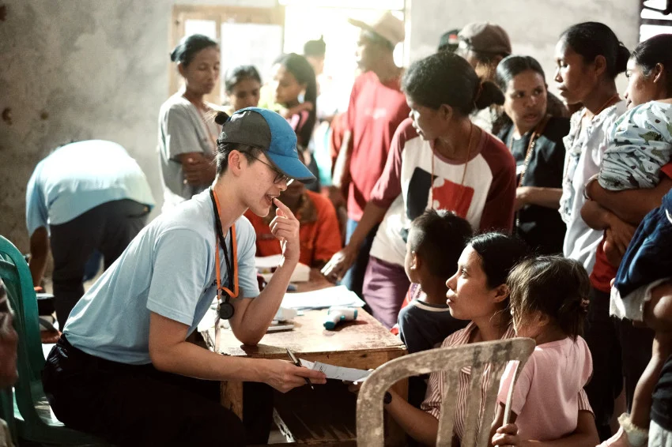Cakupan imunisasi campak di Indonesia saat ini sudah mencapai sekitar 94% balita melalui kampanye imunisasi dan program rutin di puskesmas, sekolah, serta posyandu, sehingga sebagian besar anak terlindungi meski masih perlu dikejar ke level ≥95% untuk benar-benar mencapai kekebalan kelompok. Di saat yang sama, kapasitas produksi vaksin lokal terus meningkat lewat pengembangan vaksin dalam negeri seperti IndoVac dan platform mRNA serta penunjukan perusahaan biotek Indonesia sebagai pusat unggulan vaksin dengan dukungan teknis dan regulasi dari WHO dan mitra seperti Jepang, sehingga Indonesia makin mandiri memenuhi kebutuhan vaksinnya sendiri.
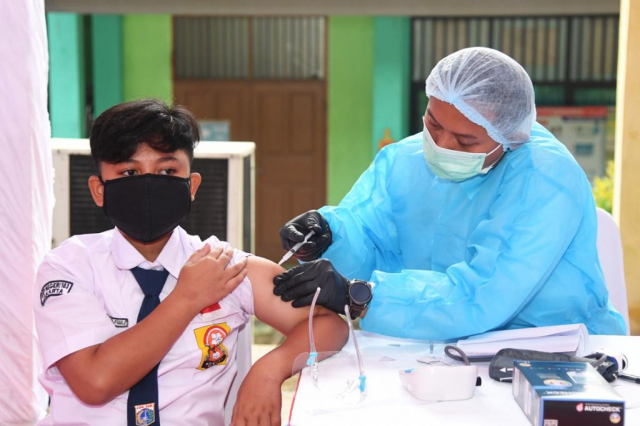Lebih dari 30% kasus ISPA pada anak berkaitan dengan kualitas udara buruk, sehingga pemerintah memperketat standar emisi, memperluas pemantauan kualitas udara, dan memperbaiki akses air bersih serta sanitasi untuk menekan penyakit terkait polusi.
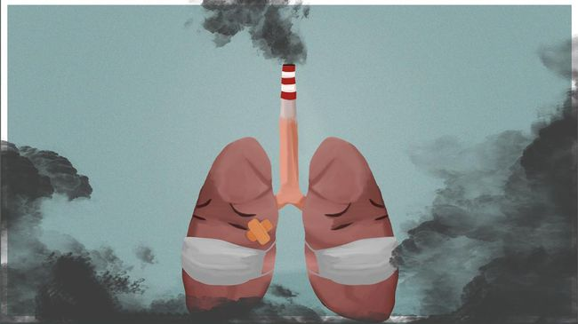Program Keluarga Berencana dan edukasi kesehatan reproduksi kini menjangkau seluruh 514 kabupaten/kota dengan cakupan remaja sekitar 73%, membantu mencegah kehamilan tidak diinginkan dan meningkatkan pemahaman tentang kesehatan seksual yang aman.
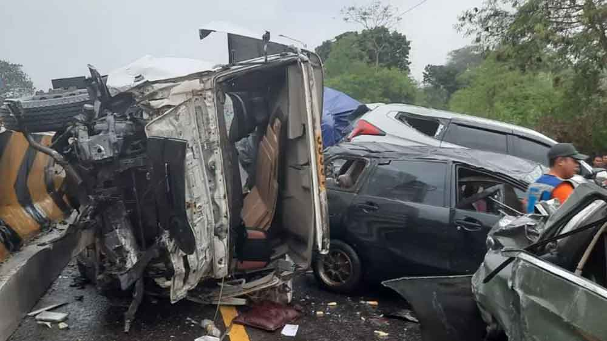Program Keluarga Berencana dan edukasi kesehatan reproduksi kini menjangkau seluruh 514 kabupaten/kota dengan cakupan remaja sekitar 73%, membantu mencegah kehamilan tidak diinginkan dan meningkatkan pemahaman tentang kesehatan seksual yang aman.
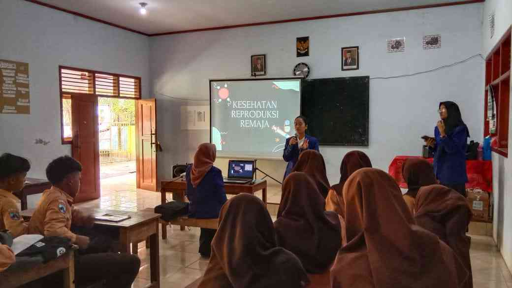Kampanye anti-narkoba dan pengendalian tembakau yang melibatkan sekolah, media, dan layanan konseling berhasil menurunkan angka perokok remaja sekitar 3% dalam dua tahun terakhir, meski masih perlu penguatan regulasi iklan dan harga rokok.
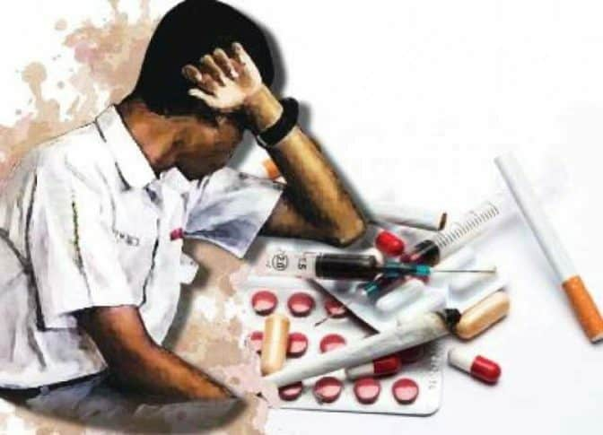Penempatan dokter ke daerah 3T (Terdepan, terluar, dan tertinggal) meningkat sekitar 15% sejak 2022 melalui program Nusantara Sehat dan berbagai skema penugasan khusus, sementara beasiswa dan pelatihan berkelanjutan bagi tenaga medis diperluas untuk menutup kekurangan dokter spesialis di daerah.
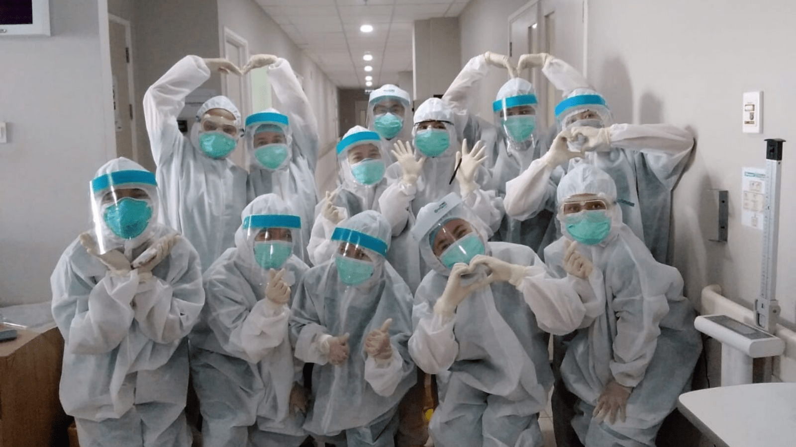Fokus utama Indonesia sekarang adalah memastikan semua orang, baik di kota maupun desa, bisa mendapatkan layanan kesehatan yang bagus dan tidak sulit diakses. Pemerintah dan berbagai pihak juga sedang berusaha keras supaya penyakit berbahaya, baik yang menular (seperti TBC, DBD) maupun yang tidak menular (misalnya penyakit jantung, stroke, dan diabetes), bisa ditekan jumlahnya. Selain itu, banyak program edukasi seperti kampanye hidup sehat, layanan kesehatan online, dan kerjasama dengan organisasi internasional terus diperkuat.
Upaya mewujudkan kesejahteraan kesehatan di Indonesia masih menghadapi tantangan besar yang bersifat struktural, geografis, dan perilaku.
Warga di desa terpencil dan kawasan 3T (Terdepan, Terluar, Tertignga) jauh lebih sulit menjangkau layanan kesehatan dasar dibanding penduduk kota, sehingga banyak penyakit terlambat ditangani.
Jumlah tenaga kesehatan nasional sebenarnya bertambah, tetapi menumpuk di kota-kota besar sehingga puskesmas di wilayah timur kekurangan dokter, apalagi spesialis.
Anggaran kesehatan yang terbatas membuat banyak fasilitas belum memiliki alat modern, obat bermutu, dan SDM yang cukup untuk melayani semua orang secara merata.
PTM seperti jantung, stroke, kanker, diabetes, dan PPOK membutuhkan pengelolaan jangka panjang dan biaya tinggi, sementara faktor risiko (merokok, diet buruk, kurang olahraga) masih luas.
Meskipun ada kemajuan vaksinasi dan pengobatan, TBC, DBD, HIV, dan penyakit berbasis lingkungan tetap tinggi karena sanitasi, kepadatan, dan kepatuhan berobat yang belum optimal.
Banyak orang masih merokok, kurang aktivitas fisik, konsumsi tinggi gula/garam/lemak, dan enggan rutin cek kesehatan meski program promosi kesehatan sudah berjalan.
Polusi udara, air tercemar, dan perubahan iklim meningkatkan kejadian penyakit pernapasan, diare, penyakit kulit, dan masalah gizi, terutama pada anak dan kelompok miskin.
Program Jaminan Kesehatan Nasional (JKN) sudah melindungi lebih dari 4 dari 5 penduduk Indonesia, sehingga semakin banyak orang bisa berobat menggunakan BPJS di puskesmas, klinik, dan rumah sakit tanpa takut biaya tinggi.
Pemerintah terus menambah dokter, perawat, dan bidan lewat rekrutmen nasional, pendidikan kedokteran, serta penugasan ke daerah, sehingga kapasitas pelayanan kesehatan perlahan makin kuat.
Perusahaan seperti Bio Farma dan berbagai pusat riset kampus kini mampu mengembangkan dan memproduksi vaksin serta obat sendiri, mengurangi ketergantungan impor dan mempercepat ketersediaan untuk masyarakat.
Indonesia aktif bermitra dengan WHO, UNICEF, Jepang, Australia, dan lembaga lain untuk pendanaan, riset, pelatihan SDM, dan pengadaan vaksin, sehingga upaya mencapai SDGs 3 didukung jaringan global yang luas.
Platform SATUSEHAT dan layanan telemedicine membuat rekam medis terintegrasi dan konsultasi jarak jauh jadi lebih mudah, terutama membantu warga di daerah yang jauh dari rumah sakit besar.
Kampanye seperti GERMAS, sosialisasi di sekolah, komunitas, dan media sosial membuat semakin banyak orang mengenal pentingnya olahraga, makan sehat, cek kesehatan rutin, serta kesehatan mental.
Berbagai program air bersih, pengelolaan limbah, dan sanitasi lingkungan diperkuat oleh pemerintah dan mitra, sehingga lingkungan tempat tinggal makin mendukung pencegahan penyakit dan kualitas hidup yang lebih baik.
GERMAS, atau Gerakan Masyarakat Hidup Sehat, adalah program pemerintah Indonesia yang bertujuan mendorong seluruh masyarakat untuk menerapkan pola hidup sehat dalam kehidupan sehari-hari. Inisiatif ini mencakup berbagai aksi sederhana seperti rutin berolahraga, makan buah dan sayur, cek kesehatan secara berkala, tidak merokok, menjaga kebersihan lingkungan, dan mengelola stres dengan baik. Dengan GERMAS, pemerintah ingin memperkuat pencegahan penyakit, meningkatkan kesadaran masyarakat tentang kesehatan, dan mengurangi beban penyakit menular maupun tidak menular di Indonesia. Program ini melibatkan lintas sektor, mulai dari keluarga, sekolah, hingga komunitas dan lembaga publik, agar budaya hidup sehat bisa diterapkan oleh seluruh penduduk. Jutaan warga ikut olahraga, makan sehat, cek kesehatan, dan kurangi rokok.
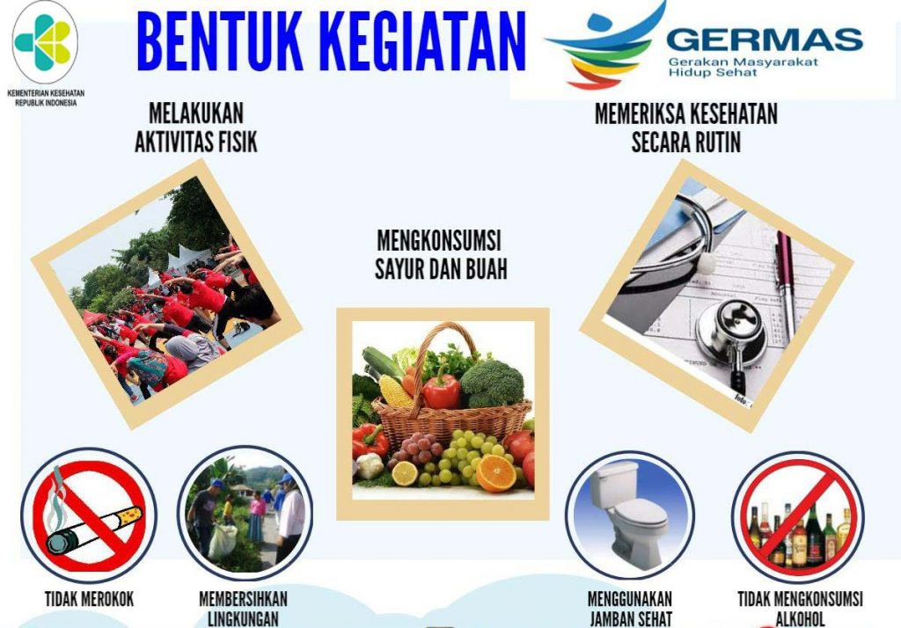Sekolah, kampus, organisasi pemuda, dan komunitas rutin mengadakan penyuluhan tentang gizi seimbang, kesehatan mental, bahaya rokok/narkoba, dan kesehatan reproduksi, sehingga informasi kesehatan tidak hanya datang dari tenaga medis tetapi juga dari sesama warga. Penelitian dan laporan Kemenkes menunjukkan kader posyandu, mahasiswa, dan relawan berperan sebagai motivator dan komunikator yang mengajak ibu, remaja, dan lansia aktif datang ke posyandu serta mengikuti kelas kesehatan.
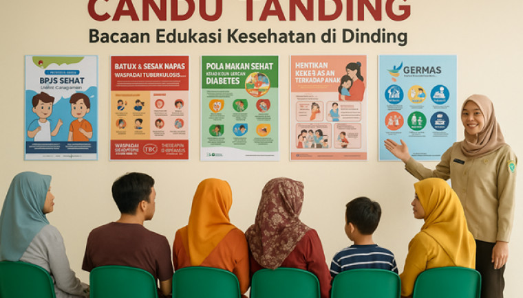Masyarakat bekerja sama dengan puskesmas dalam program vaksinasi, pendataan kesehatan keluarga, distribusi obat dan vitamin, serta pemantauan kasus penyakit di lingkungan. Di banyak daerah, kader dan warga membantu mengantar lansia ke puskesmas, mendukung distribusi vaksin dan obat dari dinas kesehatan, serta menjadi penghubung antara tenaga farmasi dan rumah tangga agar stok obat dan vaksin terjaga.
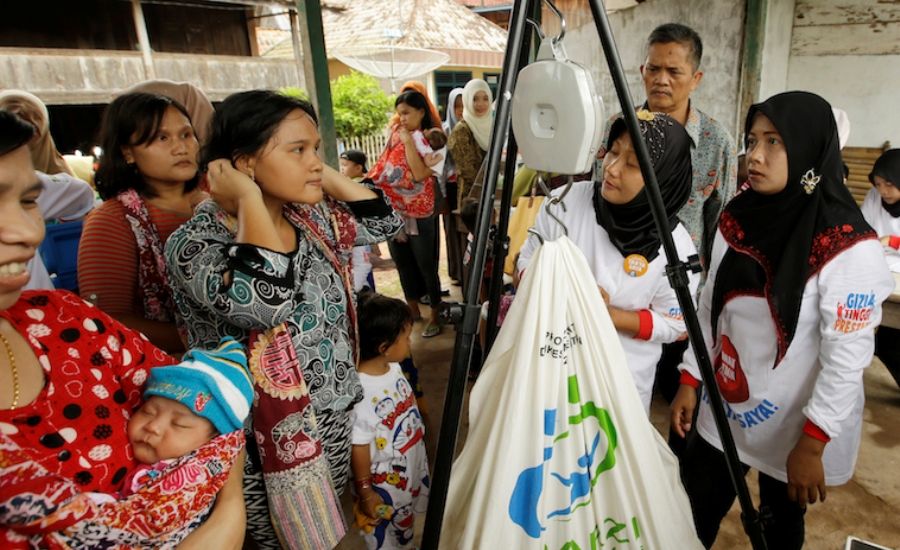Warga berpartisipasi dalam program Sanitasi Total Berbasis Masyarakat (STBM), gotong royong membangun jamban sehat, saluran air, tempat sampah, dan kebun lingkungan untuk mengurangi penyakit diare, DBD, dan stunting. Contohnya di Sumbawa Barat dan banyak desa lain, kolaborasi warga, pemerintah daerah, dan UNICEF berhasil mencapai akses air bersih 100%, menurunkan diare hingga lebih dari 70%, dan sekaligus memperbaiki status gizi anak.
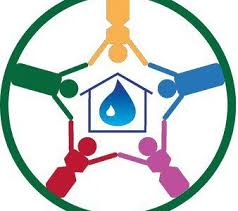Komunitas lokal, organisasi difabel, dan pemerintah daerah mengembangkan posyandu lansia dan posyandu disabilitas yang menyediakan cek kesehatan, fisioterapi, konseling psikologis, serta edukasi khusus bagi lansia dan penyandang disabilitas. Praktik seperti Posyandu Disabilitas di Tuban dan beberapa daerah lain menunjukkan bahwa layanan yang ramah difabel dan lansia bisa meningkatkan kualitas hidup, akses pengobatan, dan rasa diterima bagi kelompok rentan tersebut.
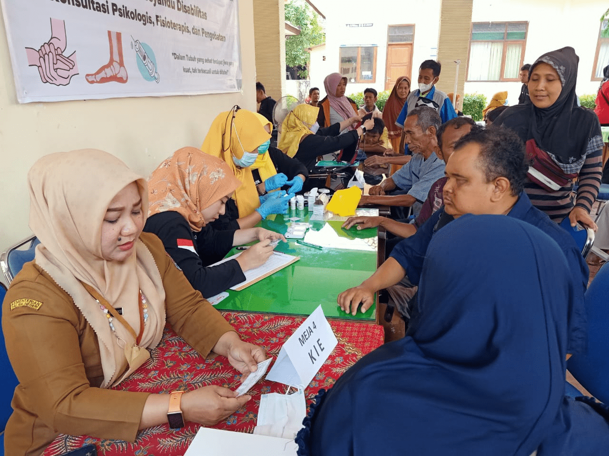